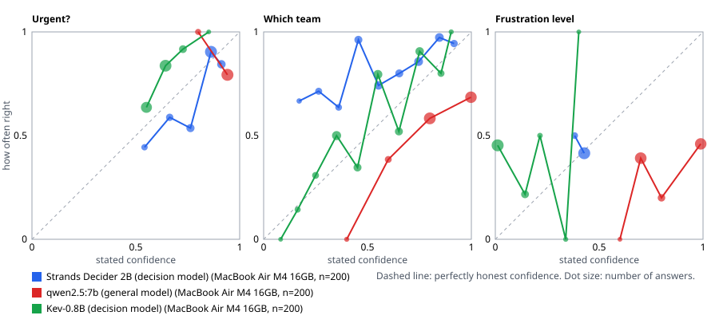

Is the confidence honest?
Testing open System One decision models on support routing
Mohamed Ansar · Technical report · 11 October 2026
Independent work, not peer reviewed. Every number in this report comes from runs in the accompanying repository, on the machine named next to it.
Abstract
On 50 held-out support requests, an open 2-billion-parameter decision model (Strands Decider 2B) picked the right team 80% of the time, against 64% for a general 7-billion-parameter model, at one fifth of the time per request on a laptop, and its stated confidence was the most honest of any contender (calibration error 0.05 for urgency, 0.06 for frustration). The general model was overconfident: on the development set it claimed near-certainty on 89 team answers and was right on 68% of them. The surprise was the cheapest contender: keyword rules written by the same author as the requests came within one request of the best model on team (78%), a warning about how much a test set's vocabulary can flatter a simple method, and a reason this report leans on calibration, not accuracy alone.
In 2026 a new kind of model appeared: the decision model, sometimes called a System One model, which does not write text but answers typed questions (yes or no, pick one, rate on a scale) with a probability for each answer. Within weeks of the first hosted one (TypeSafe's Jev), several open-weight alternatives were released, almost all of them evaluated only by their makers. This report tests the pattern independently on one realistic task, routing support requests, using 250 hand-labelled requests, one shared interface for every contender, and a held-out set scored once. It asks two questions: can a small, cheap model make these routine decisions as well as a bigger general model, and when it says it is 90% sure, is it right 90% of the time?
1. Why this question
I've worked close to support operations where a single language's queue could hold thousands of tickets. Every one of them gets the same few decisions before a person reads it, and every wrong decision sends a ticket to the wrong queue, where it waits. Multiply that by every language a company supports and it stops being a small problem. That is where this question comes from.
Most of what a support desk does before a person reads a message is a handful of small decisions. Is this urgent? Which team should see it? How upset is this person? Each decision is cheap on its own, but there are thousands a day, and each wrong one costs something: an urgent request waits in the wrong queue, a furious customer gets a template reply.
Large language models can make these decisions, but they are a heavy tool for a light job. They are slow (seconds per request on a laptop), they are often paid per token, and they answer in free text that has to be parsed. Most importantly for this report, they don't naturally say how sure they are, and when asked, the number they give is not always meaningful.
Confidence matters more than it first appears. A model that is right 85% of the time is hard to use on its own: which 15% are wrong? But a model that is right 85% of the time and knows which answers it is unsure of can be deployed safely. Let it handle the sure cases, and send the rest to a bigger model or a person. That only works if the confidence is honest. A model that says "95% sure" and is right 70% of the time is worse than one that says nothing, because it invites trust it hasn't earned.
So the two questions of this report are:
- Accuracy and cost. Can a small decision model match a bigger general model on routine support decisions, and at what speed and cost?
- Calibration. When a model states a confidence, how often is it actually right? (A model is well calibrated when, among all the answers it gives with 80% confidence, about 80% are right.)
And one practical follow-up:
- Fast then slow. If the fast model answers everything and hands over only what it is unsure of, how much of the bigger model's work can be skipped without losing accuracy?
This is a personal project. It builds on two earlier ones of mine: an evaluation harness that scores an analytics assistant against an answer key, and a "team" of a fast and a slow checker for misfiled products, where the fast checker's doubts decided what the slow one looked at.
2. Background: System One models
2.1 The pattern
The name borrows from psychology's "System 1" (fast, automatic judgement) and "System 2" (slow, deliberate reasoning). A System One model is meant to be the fast part: it takes a piece of state (a message, a ticket, a chat log) and a set of typed questions, and returns, in one pass, a probability for every allowed answer.
The interface, as published for Jev, has three question types:
| Type | Asks | Answer |
|---|---|---|
noul |
Is this statement true? | One probability from 0 to 1 |
choice |
Which of these options? (up to 255) | A probability per option, the chosen option, and a confidence |
score |
Where on this scale? (2 to 10 levels) | A probability per level; the score is the probability-weighted level; and a confidence |
A request to such a model looks like this (shortened):
{
"model": "...",
"state": "I have been trying to connect our payment tool for 3 days and it keeps failing. I am losing sales.",
"questions": {
"is_urgent": {"type": "noul", "instructions": "This request needs a person today."},
"team": {"type": "choice", "options": ["billing", "technical-support", "sales"], "instructions": "..."},
"frustration":{"type": "score", "min": 1, "max": 5, "instructions": "1 calm to 5 furious"}
}
}
The key design choice is that the answer is never free text. It is always one of the allowed answers, with numbers attached. That makes the output safe to act on in code and makes calibration directly measurable.
2.2 The models
TypeSafe's Jev is hosted and paid. Its public documentation describes the interface above; how it works inside is not public, and this report makes no claim about it. Jev was not run for this report (it is paid and access is by waitlist); the code to run it exists and is switched off.
Within weeks, open-weight alternatives appeared. The ones checked for this report:
| Model | Released by | Size | Licence | Runs on a 16 GB Mac? |
|---|---|---|---|---|
| Kev (0.8B, 4B, 9B, 27B) | Jared Palmer | Adapter and decision head on a Qwen3.5 base | Apache-2.0 | 0.8B only |
| Strands Decider 2B | AWS Strands Labs | 1.9B, Qwen3.5 base | Apache-2.0 | Yes |
| Laya (421M; typed-decisions variant) | Convai Innovations | 421M, ModernBERT-large encoder | Apache-2.0 | Yes |
| Clef, Clef-flash | Cloudflare | 27B, 9B | Apache-2.0 (reported) | No (41 GB+) |
Three things stood out when reading their own documentation, and they shaped how this test was designed:
- Every benchmark number is self-reported. None of the projects' figures are used here.
- "Confidence" means something different in each. Kev applies a fitted temperature per checkpoint and states that its confidences "are not measured accuracy rates". Laya says it ships over-confident and that users should refit temperatures on their own data. Strands reports a calibration error on its own benchmark. The only fair comparison is to measure every model's stated confidence against what actually happens, on the same requests.
- Not every model is a drop-in. Laya's own documentation says its base checkpoints score below "always pick the most common answer" without fine-tuning; only its typed-decisions variant (fine-tuned on someone else's data, not ours) is tested here, labelled as such.
All three local models ship a server that speaks the same interface as Jev, which made a like-for-like test possible.
3. Method
The rule throughout: decide how something will be measured before measuring it, write the decision down with a date, and never look at the held-out data while building.

3.1 The task and the made-up company
The requests are written to a fictional company, Quillstack, which sells a web and mobile app for staff scheduling, timesheets and invoicing to small businesses. It has three plans, a public API, webhooks and connections to accounting, payment and calendar tools. Support requests to such a company are varied enough to be realistic (billing, logins, bugs, integrations, privacy, sales, how-to questions, feedback) without coming from any real support queue.
3.2 Labelling rules, written first
Before a single request was written, the rules for labelling them were written down (docs/labelling-rules.md). Each request gets three labels:
Urgent? True only if at least one of these holds: the customer can't do core work in the product right now; money was taken wrongly or a failed charge is about to cut them off; there is a possible security problem; data was lost and is needed back; or there is a real deadline within about a day with a stated cost. Explicitly not urgent: angry tone or "ASAP" on their own, how-to questions, feature requests, sales questions.
Which team? One of eight: billing, account-access, technical-support, integrations-api, security-privacy, sales, how-to, feedback, each defined in a table. When a message contains two problems, the team is the one whose problem most blocks the customer, with a fixed tie-break order. Edge rules are written down (a bug inside a connection goes to integrations, not technical support; "cancel my account" is billing, "delete my data" is security-privacy).
How frustrated? 1 (calm or positive) to 5 (furious, insults or legal threats), with a sentence per level. Sarcastic praise is judged by what it means, so "great job charging me twice" is frustration, not calm. Grammar is never read as emotion.
3.3 The test set
250 requests were written by hand following those rules. 88 of them (35%) are deliberately hard, tagged as:
| Hard case | Count | Example |
|---|---|---|
| Two problems in one message | 15 | "We were double charged AND now nobody on my team can log in. Payroll runs tomorrow." |
| Sarcasm | 22 | "Oh wonderful, another surprise charge. I just love paying for 14 users when we have 9." |
| Very short | 29 | "Locked out. Again." |
| Non-native English | 23 | "Sir please my company pay two time this month, the bank show it." |
The labels are spread across all eight teams (29 to 37 each), 61 requests are urgent, and frustration runs from 111 at level 1 down to 9 at level 5.
A script splits the set with a fixed seed into 200 for development and 50 held out, spread evenly across teams, with at least three of each kind of hard case in the held-out set. The development set is where prompts and rules may be built and adjusted. The held-out set is scored once, at the end; the scripts refuse a second held-out run for the same contender.
3.4 One interface for everyone
Every contender sits behind the same small Python interface (systemone/). It receives a request in the System One shape and must return an answer in that shape. Before any answer is scored, a checker rejects it if anything is off: a missing answer, a probability outside 0 to 1, probabilities that don't add up to 1, a chosen option that isn't the most likely one, or a score that isn't the probability-weighted level. A broken contender fails loudly instead of being scored on malformed output.
The same set of contract tests runs against every contender: a sample of development requests covering every hard case, unfamiliar question types (to catch a contender that only knows our three questions), a single question, a structured rather than plain-text state, and a deliberately bad request. The full test suite has 58 tests.
Every contender gets exactly the same three questions, worded from the labelling rules (systemone/questions.py).
3.5 The contenders
| Contender | What it is | Why it's here |
|---|---|---|
| Even odds | Equal probability on everything | The floor: any real contender must beat it |
| Rules | Keyword lists with weights, turned into probabilities | The cheap baseline every model has to justify itself against |
qwen2.5:7b via Ollama |
A general 7-billion-parameter language model, prompted to answer in the System One shape | The "bigger model": what most people would reach for |
| Kev-0.8B | Open decision model, 0.8B (adapter on a Qwen3.5 base) | The smallest and fastest decision model that fits a 16 GB laptop |
| Strands Decider 2B | Open decision model, 1.9B (Qwen3.5 base) | A mid-size decision model with its own published calibration claims |
| Laya-typed-decisions | Open decision model, 421M encoder, fine-tuned on another benchmark | A different architecture (encoder, not a language model), tested as shipped |
The rules were written while looking at the development set, so their development scores are optimistic by construction. The held-out set is their fair test.
3.6 What is measured
For each contender and each question:
- Accuracy. Urgent: is the probability on the right side of 0.5? Team: is the chosen team right? Frustration: is the most likely level exactly right?
- Per-team accuracy, to show where a contender fails, not just how often.
- Frustration distance: the average gap between the stated score and the right level.
- Speed: median and 90th-percentile seconds per request (all three questions together), on the named machine.
- Cost per 1,000 requests: zero for local runs, stated plainly as excluding hardware and electricity. Paid APIs would be priced from a real bill only.
- Calibration. Answers are grouped into ten bands by stated confidence (0 to 0.1, 0.1 to 0.2, and so on). For each band: the average stated confidence and the share actually right. On a chart, a perfectly honest model sits on the diagonal. The expected calibration error (ECE) summarises the chart in one number: the average gap between stated confidence and actual accuracy, weighted by how many answers fall in each band. Zero is perfect.
For a yes or no answer, "confidence" is the distance from a coin flip: a 0.9 or a 0.1 both mean 90% sure.
3.7 Fast then slow

The fast contender answers every request. A request's confidence is the lowest of its three answers' confidences. Below a threshold, the whole request goes to the slow contender. This is worked out from the saved runs, so both contenders saw exactly the same requests.
The rule for choosing the threshold was written down before any model ran: try thresholds from 0 to 1 in steps of 0.05, and fix the lowest one at which urgent and team accuracy are both within 0.02 of the slow contender on its own. Lowest means fewest requests handed over. If no threshold qualifies, the report says so: the fast model didn't help. The threshold is fixed on the development set and used, unchanged, on the held-out set.
4. A finding along the way: the question shaped the answer
The first full run of the general model (qwen2.5:7b, prompt version 1) produced a result that looked like a model problem and turned out to be a measurement problem.
Prompt v1 asked the model, for each question, to give a probability for every allowed answer, in a JSON object whose keys were listed in a fixed order. For urgency (two answers) this worked well: 84% accuracy with a calibration error of 0.06, the best-calibrated answer of any contender so far. For team (eight answers) it collapsed to 43%.
The per-team breakdown showed why:
| Team (in the order listed) | Right |
|---|---|
| billing | 26 of 26 |
| account-access | 20 of 23 |
| technical-support | 25 of 30 |
| integrations-api | 1 of 23 |
| security-privacy | 8 of 26 |
| sales | 3 of 23 |
| how-to | 1 of 24 |
| feedback | 3 of 25 |
And the model's picks: technical-support 96 times, billing 54, account-access 24, and the remaining five teams 26 times between them. 174 of 200 answers landed on the first three options in the list.
The model was not failing to understand the requests. It was filling in a long form from the top, putting most of its probability on the first keys it wrote. Asking a small model for a full probability table, in a fixed order, measured the shape of the prompt as much as the model.
This matters beyond this project. A common way to get "probabilities" out of a general language model is exactly this: ask for a number per option. The result here suggests those numbers can be shaped by position, and that an evaluation built on them can blame the model for a flaw in the question.
Prompt v2 asks instead for one answer, which must be one of the allowed options, plus a confidence from 0 to 1. The named answer gets the stated confidence; the rest is shared among the other options (on the frustration scale, among the neighbouring levels only, so the score is not pulled toward the middle). Both versions are kept in the results. Adjusting the prompt on the development set is what the development set is for; the held-out set was not touched.
With v2, on the same 200 requests and the same machine:
| Prompt v1 (probability per option) | Prompt v2 (one answer plus confidence) | |
|---|---|---|
| Team accuracy | 0.43 | 0.61 |
| Answers in the first three options | 174 of 200 | 142 of 200 |
| Urgent accuracy | 0.84 | 0.80 |
| Frustration off by | 0.94 | 0.79 |
| Calibration error, urgent | 0.06 | 0.15 |
| Calibration error, team | 0.35 | 0.26 |
| Calibration error, frustration | 0.19 | 0.43 |
| Median seconds per request | 12.2 | 7.8 |
v2 fixed most of the accuracy problem: integrations went from 1 to 10 of 23, sales from 3 to 11, feedback from 3 to 17. It was also faster, because the answer it writes is much shorter. The pile-up shrank but did not disappear, and one team, how-to, is still almost never chosen (2 picks in 200).
But the fix had a price that accuracy alone would hide: the confidence got less honest. When the model writes its own confidence as a number, it is overconfident. Calibration error on frustration more than doubled, from 0.19 to 0.43, and on urgency went from 0.06 to 0.15. The v1 probability table, where position bias didn't bite (urgent has only two options), was the better-calibrated of the two.
So the two ways of asking a general model for probabilities fail in different directions: a full table is distorted by the order of options, and a self-reported confidence is inflated. Neither gives what a System One model promises by design: a calibrated probability for every answer, in one pass. That is the gap the open decision models claim to fill, and section 5 tests whether they do.
The open decision models avoid this problem by design: they score every allowed answer in one pass rather than writing a list, so the order of options in the prompt should not matter. Whether that holds in practice is part of what section 5 measures.
5. Results
5.1 Development set
Machine: MacBook Air M4, 16 GB (models); a Linux cloud container (rules and even odds, which need no model).
| Contender | Urgent | Team | Frustration off by | Calibration error (urgent / team / frustration) | Median seconds | Cost per 1,000 |
|---|---|---|---|---|---|---|
| Even odds | 0.26 | 0.13 | 1.29 | 0.24 / 0.01 / 0.24 | 0.0000 | 0 |
| Rules | 0.82 | 0.73 | 0.90 | 0.04 / 0.34 / 0.34 | 0.0001 | 0 |
qwen2.5:7b, prompt v1 |
0.84 | 0.43 | 0.94 | 0.06 / 0.35 / 0.19 | 12.2 | 0 |
qwen2.5:7b, prompt v2 |
0.80 | 0.61 | 0.79 | 0.15 / 0.26 / 0.43 | 7.8 | 0 |
| Kev-0.8B | 0.77 | 0.60 | 1.08 | 0.15 / 0.14 / 0.40 | 0.34 | 0 |
| Strands Decider 2B | 0.80 | 0.85 | 1.10 | 0.08 / 0.21 / 0.02 | 1.64 | 0 |
| Laya-typed-decisions | 0.80 | 0.46 | 1.17 | 0.18 / 0.20 / 0.11 | 0.32 | 0 |
Remember that the rules' development numbers are optimistic: the keywords were chosen while reading these requests.
5.2 The first decision model: Kev-0.8B
Kev-0.8B is less than an eighth the size of qwen2.5:7b and was tested exactly as shipped (its own default calibration setting, a temperature of 2.35). On picking the team, the question with the most options:
| Kev-0.8B | qwen2.5:7b, prompt v2 |
|
|---|---|---|
| Team accuracy | 0.60 | 0.61 |
| Calibration error, team | 0.14 | 0.26 |
| Median seconds per request | 0.34 | 7.8 |
It matches the general model's accuracy, more than 20 times faster, and its confidence on the team is more honest (calibration error 0.14 against 0.26).
One detail shows how sensitive these numbers are. Kev was first run with no description for each option (its server accepts that); Strands Decider requires one, so every decision model was then re-run with each option's own name as its description. Kev's accuracy did not change at all, but its team calibration error doubled, from 0.07 to 0.14. The words around an option change how sure the model is, even when they don't change what it picks. The table uses the re-run, so every decision model saw identical requests.
It also fails differently. It handles sales (17 of 23) and how-to (10 of 24), which the general model almost never chose, and is weak on integrations (7 of 23) and feedback (7 of 25). It picks every team; there is no pile-up on the first options.
Its weak spot is frustration: answers are off by 1.08 levels on average, and its probabilities across the five levels are often nearly flat, with a stated confidence of 0. Kev's documentation says its confidence values are "not measured accuracy rates", and on this question it effectively says "I don't know", which is at least honest.
5.3 The second decision model: Strands Decider 2B
Strands Decider 2B was the strongest contender on the development set:
| Strands Decider 2B | Kev-0.8B | qwen2.5:7b, prompt v2 |
|
|---|---|---|---|
| Team accuracy | 0.85 | 0.60 | 0.61 |
| Urgent accuracy | 0.80 | 0.77 | 0.80 |
| Frustration off by | 1.10 | 1.08 | 0.79 |
| Calibration error (urgent / team / frustration) | 0.08 / 0.21 / 0.02 | 0.15 / 0.14 / 0.40 | 0.15 / 0.26 / 0.43 |
| Median seconds per request | 1.64 | 0.34 | 7.8 |
It picks the right team 85% of the time, 24 points above the general model, in about a fifth of the time. Unlike every other contender it is strong on every team: integrations 20 of 23, how-to 19 of 24, feedback 19 of 25, the teams the general model could barely see.
Its frustration scores are no better than anyone's (off by 1.10 levels), but its stated confidence on them is almost perfectly honest (calibration error 0.02): it is unsure, and it says so. That is exactly the property that makes fast-then-slow possible.
5.4 The third decision model: Laya-typed-decisions
Laya was the weakest decision model here: team 0.46, and the exact frustration level right only 17% of the time. This is what its own documentation predicts. The variant tested was fine-tuned on a different benchmark, never on support routing, and its authors describe Laya as "a fast base to specialise". It was tested as shipped, as agreed before running it. Its speed (0.32 seconds) puts it with Kev, and its frustration confidence is fairly honest (calibration error 0.11), but without fine-tuning on this kind of task it is not a contender for routing.
Laya also defines confidence differently from the others: one minus the normalised entropy of its probabilities, a measure of how spread out they are, rather than Jev's definition. Every project in this test uses "confidence" to mean something slightly different, which is why it is measured here rather than trusted.
5.5 Calibration

Each dot is a group of answers with similar stated confidence; on the dashed line, a contender that says 80% is right 80% of the time.
Two readings stand out.
The general model is overconfident on the question that matters most. With prompt v2, qwen2.5:7b gave a team confidence of about 1.0 on 89 of 200 development requests and was right on 61 of them (68%). Another 96 answers came with a confidence of about 0.8 and were right 58% of the time. Its stated confidence is a number it writes, and the number is inflated.
Strands Decider is honest, slightly modest even. Its team answers given with about 0.85 confidence were right 97% of the time on development (37 answers) and 100% on held-out (13). Its frustration answers, the weakest part of every model, come with a calibration error of 0.02 on development and 0.06 on held-out: it is often unsure about frustration, and it says so.
The keyword rules are the opposite of overconfident: their probabilities come from counting keywords, so they say 30% when they are right 80% of the time (team calibration error 0.34 on development, 0.44 on held-out). Accurate, but their confidence carries no useful signal.
Already visible with two contenders: the keyword rules are more modest than they need to be on team (when they say 50%, they are right about 80% of the time) and overconfident on frustration. A model's raw accuracy says nothing about which of these it is.
5.6 Hard cases
Team accuracy on the development set (200 requests; the held-out set has only 3 to 8 of each kind, too few to read):
| Contender | Plain (133) | Two problems (12) | Sarcasm (17) | Very short (21) | Non-native (17) |
|---|---|---|---|---|---|
| Strands Decider 2B | 0.85 | 0.67 | 0.88 | 0.95 | 0.82 |
| Rules | 0.73 | 0.50 | 0.71 | 0.90 | 0.71 |
qwen2.5:7b v2 |
0.61 | 0.33 | 0.65 | 0.71 | 0.65 |
| Kev-0.8B | 0.60 | 0.33 | 0.82 | 0.62 | 0.53 |
- Two problems in one message is the hardest case for everyone. Choosing which problem "most blocks the customer" is a judgement the labelling rules make and the models mostly don't.
- Sarcasm fools urgency, for everyone. Every model scored exactly 0.59 on urgency for sarcastic requests: sarcastic messages about real problems ("love paying twice") were read as not urgent.
- Tone is where the general model still leads. On sarcastic requests,
qwen2.5:7bwas closest on frustration (off by 0.53 levels against 0.98 for Strands). Reading the emotion behind the words is the one place a bigger language model clearly helped.
Full tables: results/dev/hard_cases.md.
5.7 Fast then slow
The planned version found nothing to hand over. The rule written before any model ran paired each decision model with the general model as the "slow" side. But the best decision model, Strands Decider 2B, is already more accurate than the general model (team 0.85 against 0.61), so the rule chose a threshold of 0: never hand over. The bigger, slower model added nothing.
The rule also had a flaw, which the data exposed. A request's confidence was defined as the lowest of its three answers' confidences. Kev and Laya are almost never confident about frustration, so frustration dragged nearly every request under the threshold: Kev handed over 186 of 200 requests, Laya 197. A sensible-looking rule broke because one question is almost always uncertain.
An exploratory version, labelled as such. After seeing the development results, and before any held-out run, one variant was added and fixed: hand over on the team answer's confidence only, from the fastest decision model (Kev, 0.34 s) to the most accurate (Strands, 1.64 s). The same "within 0.02 of the slow side" rule chose a threshold of 0.70:
| On the development set | Handed over | Team | Urgent | Total time for 200 |
|---|---|---|---|---|
| Kev alone | 0 | 0.60 | 0.77 | 69 s |
| Kev, then Strands below 0.70 team confidence | 151 (76%) | 0.84 | 0.80 | 324 s |
| Strands alone | 200 | 0.85 | 0.80 | 406 s |
It keeps almost all of Strands' accuracy for about 20% less time. That is a modest saving, because Strands is already cheap. The pattern is sound; at these speeds, the case for it is weak.
On the held-out set, with thresholds fixed beforehand:
| On the held-out set (50) | Handed over | Team | Urgent | Total time |
|---|---|---|---|---|
Planned: Strands, then qwen2.5:7b below 0.00 |
0 | 0.80 | 0.82 | 74 s |
| Exploratory: Kev, then Strands below 0.70 | 42 (84%) | 0.78 | 0.82 | 78 s |
| Strands alone | 50 | 0.80 | 0.82 | 74 s* |
*Strands alone took 74 seconds for the 50 requests in its own run; in the exploratory pair it took 91 seconds when combined with Kev for all 50.
The exploratory pair held up: one request behind Strands alone, having handed over 84%. At these speeds the saving is small. The bigger lesson is that fast-then-slow needs a slow side that is actually better, and a confidence signal that isn't dominated by one always-uncertain question.
5.8 Held-out set
Each contender answered the 50 held-out requests once, after every prompt, rule and threshold was fixed.
| Contender | Urgent | Team | Frustration off by | Calibration error (urgent / team / frustration) | Median seconds | Machine |
|---|---|---|---|---|---|---|
| Strands Decider 2B | 0.82 | 0.80 | 1.15 | 0.05 / 0.17 / 0.06 | 1.45 | MacBook Air M4 16 GB |
| Rules | 0.84 | 0.78 | 0.95 | 0.07 / 0.44 / 0.37 | 0.0001 | Cloud container |
qwen2.5:7b, prompt v2 |
0.82 | 0.64 | 0.85 | 0.13 / 0.22 / 0.43 | 7.72 | MacBook Air M4 16 GB |
| Kev-0.8B | 0.80 | 0.60 | 1.08 | 0.16 / 0.12 / 0.50 | 0.34 | MacBook Air M4 16 GB |
| Laya-typed-decisions | 0.88 | 0.48 | 1.26 | 0.25 / 0.29 / 0.18 | 0.32 | MacBook Air M4 16 GB |
Every contender held its development-set level within a few points, so nothing was tuned too closely to the development set. The rules even did slightly better (team 0.73 on development, 0.78 here); see below for why that is not reassuring. With 50 requests, one request is two percentage points: Strands (40 right) and the rules (39) are a tie in accuracy. Laya's 0.88 on urgency is four requests better than the next, not a real lead.
The rules' result needs explaining, not celebrating. The keyword lists were written by the same person who wrote the requests, from the same labelling rules, so they share a vocabulary: "invoice" means billing, "webhook" means integrations. Real customers don't write to match the routing team's keyword list. The rules' near-tie on accuracy is most likely a property of this test set, and their confidence is the worst of any contender (team calibration error 0.44), so even here they could not tell their right answers from their wrong ones.
6. What this means at scale
The test set has 250 requests. A real support operation has far more. This section turns the measured numbers into what they would mean at volume. The volume is an illustration, not a measurement: a desk receiving 1,000 tickets a day in each of 10 languages, so 10,000 tickets a day. Everything else comes from the runs in section 5. The arithmetic is simple on purpose, so anyone can redo it with their own volume.
6.1 The formulas
For a daily volume V:
- Machine time per day = V × median seconds per request. Divided by 86,400 seconds, this is the number of machines (of the kind measured) needed to keep up, running all day.
- Misrouted tickets per day = V × (1 − team accuracy).
- Missed urgent tickets per day = V × share of tickets that are urgent × (1 − accuracy on urgent tickets).
- Fast then slow: the slow model sees only V × share handed over. Machine time = V × fast seconds + V × share handed over × slow seconds.
6.2 Worked example with the numbers so far
At 10,000 tickets a day, using development-set numbers (held-out numbers will replace them):
| Contender | Machine time per day | Laptops needed to keep up | Misrouted per day |
|---|---|---|---|
| Rules | about 1 second | a fraction of one | about 2,700 |
qwen2.5:7b, prompt v1 (12.2 s per request) |
about 34 hours | about 1.4, running all day | about 5,700 |
qwen2.5:7b, prompt v2 (7.8 s per request) |
about 22 hours | about 0.9, running all day | about 3,900 |
| Kev-0.8B (0.34 s per request) | about 57 minutes | a small fraction of one | about 4,000 |
| Strands Decider 2B (1.64 s per request) | about 4.5 hours | about 0.2 | about 1,500 |
| Laya-typed-decisions (0.32 s per request) | about 53 minutes | a small fraction of one | about 5,400 |
| Kev, then Strands below 0.70 (exploratory) | about 4.5 hours (324 s per 200) | about 0.2 | about 1,600 |
Two things are already clear. A general 7-billion-parameter model on a laptop is too slow to be the first step for a busy desk on its own: it needs more than one machine running around the clock just to keep up with an illustrative volume. And the cheapest option, keyword rules, is fast enough for any volume but sends thousands of tickets a day to the wrong place.
6.3 Why honest confidence matters more at scale
At 250 requests, a wrong answer is a row in a table. At 10,000 a day, the question is which answers are wrong, and whether anyone finds out.
A well-calibrated model's mistakes cluster in its low-confidence answers, so a fast-then-slow setup catches most of them: they are exactly the ones handed over. An overconfident model's mistakes look like its correct answers. They are not handed over; they go to the wrong queue, quietly, every day. Two models with the same accuracy can therefore produce very different outcomes at scale, and the difference is calibration, which is why this report measures it as carefully as accuracy.
With held-out numbers, at 10,000 tickets a day:
| Contender (held-out) | Machine time per day | Misrouted per day |
|---|---|---|
| Strands Decider 2B (1.45 s) | about 4 hours | about 2,000 |
qwen2.5:7b v2 (7.72 s) |
about 21 hours | about 3,600 |
| Kev-0.8B (0.34 s) | about 57 minutes | about 4,000 |
The difference that matters at scale is not only the 1,600 fewer misrouted tickets a day. It is that Strands' mistakes come with honest low confidence, so a desk could send its least sure answers to a person; the general model's mistakes come with confidence close to 1.0 and would sail through.
7. Discussion
Can a small decision model match a bigger general model? On picking the team, yes and more: Strands Decider 2B beat qwen2.5:7b by 16 points on held-out, in a fifth of the time, on a laptop with no per-request cost. Not every decision model did: Kev matched the general model's accuracy at 20 times the speed, and Laya, fine-tuned for a different benchmark, did worse. "Decision model" is a category, not a guarantee; each one has to be measured on the task.
Is the confidence honest? For the best decision model, largely yes, and that is the result I'd lead with. Strands' calibration errors on held-out were 0.05, 0.17 and 0.06; the general model's were 0.13, 0.22 and 0.43, and its errors were concentrated where it was most sure. A model whose confidence means something can be deployed with a safety net; one whose confidence is inflated can't.
How a general model is asked changes what it seems to know. Prompt v1 made the general model look far worse than it is (team 0.43) because of the order of options; prompt v2 fixed accuracy but inflated confidence. Neither way of asking a general model for probabilities gave what the decision models give by design. Any comparison built on "ask the LLM for a probability" should report how it asked.
Fast then slow needs the right ingredients. The planned version found nothing to do, because the "slow" model was worse; and a rule built on the lowest of three confidences broke on the one question every model was unsure about. The exploratory version, a fast decision model handing over to a better one on team confidence, worked as designed but saved little, because the better model was already cheap.
What I'd tell a support team. Measure a decision model on your own tickets before trusting its benchmark. Check its calibration, not just its accuracy. And don't assume a bigger general model is the safe fallback: here it was both slower and less honest.
Where this goes next
- Other languages. This test includes 23 requests in non-native English but none written in another language. Support queues are often split by language, and Laya ships a multilingual variant. Repeating the test in two or three other languages is the natural next step.
- Real labels. A second person labelling the same requests would show how often humans disagree, which sets a ceiling on how well any model can do.
- Bigger machines. The larger Kev and Clef models did not fit on a 16 GB laptop.
8. Limits
- One author, synthetic data. Every request was written and labelled by one person in one day. A real queue is messier, more repetitive, and labelled by people who disagree. The labels follow written rules, but nobody else has checked them.
- Small numbers. 50 held-out requests means each one moves accuracy by two percentage points, and only 9 requests in the whole set are at frustration level 5. Differences of a few points between contenders should not be read as real.
- One laptop. Speeds are for a fanless MacBook Air M4 with 16 GB; it may slow down as it heats up during a long run. Larger models in each family did not fit and were not tested.
- The rules saw the development set. Their development scores are optimistic by construction.
- Laya was not trained for this task. The variant tested was fine-tuned on another benchmark; it is labelled as such and not fine-tuned on ours.
- Jev was not run. Nothing in this report describes how Jev performs or works inside. The interface specification was checked against its public documentation.
- Prompt sensitivity. Section 4 shows that the general model's results depend heavily on how it is asked. The v2 prompt is one reasonable way, not the best possible one.
9. Reproducing this report
Everything runs from projects/decision-models/, with Python 3 and no third-party packages for the harness.
python3 scripts/build_testset.py # rebuilds and checks the test set
python3 -m unittest # 58 tests
python3 scripts/run.py rules # any contender, development set
python3 scripts/run.py ollama --model qwen2.5:7b --prompt v2 --machine "..."
python3 scripts/score.py # tables and calibration chart
python3 scripts/cascade.py pick --fast <run> --slow <run>
python3 scripts/report.py # results page
The decision models each need their own server, started from their own repositories (see docs/models.md).
Appendix A. Claims ledger
Every claim in this report, and where its evidence is.
| Claim | Evidence |
|---|---|
| 250 requests, 200 / 50 split, 35% hard cases | scripts/build_testset.py output; data/ |
| Labelling rules written before labelling | docs/labelling-rules.md; commit history |
| Every answer checked against the System One shape | systemone/schema.py; tests/ |
| Fast-then-slow thresholds fixed before any held-out run (0.00 planned; 0.70 exploratory) | results/cascade.json, results/cascade-team.json |
| Threshold rule fixed before any model run | scripts/cascade.py; NOTES.md, 11 October 2026 |
| Scale figures in section 6 (volume illustrative, rates measured) | Formulas in section 6.1; rates from results/dev/*.json |
| Prompt v2: team 0.61, 142 of 200 in first three, frustration ECE 0.43 | NOTES.md; owner's run on MacBook Air M4 16 GB |
| Strands Decider 2B on dev: team 0.85, frustration ECE 0.02, 1.64 s | NOTES.md; owner's run on MacBook Air M4 16 GB |
| Kev-0.8B on dev: team 0.60 (ECE 0.14; 0.07 before the shared request shape), 0.34 s | NOTES.md; owner's run on MacBook Air M4 16 GB |
| Prompt v1: 174 of 200 team answers in the first three options | NOTES.md; owner's run on MacBook Air M4 16 GB |
| Development results in section 5.1 | results/dev/*.json, machine named in each |
| Licences of every model tested | docs/models.md |
| Held-out results in section 5.8 (scored once) | results/heldout/*.json, results/raw/heldout/*.jsonl |
| Fast-then-slow on held-out | results/heldout/cascade.json, results/heldout/cascade-team.json |
| Hard-case tables | results/dev/hard_cases.md, scripts/hard_cases.py |
| General model near-certain on 89 team answers, right on 61 | results/dev/ollama-v2_qwen2.5_7b.json, calibration bins |
Appendix B. Sources
- Kev: github.com/jaredpalmer/kev
- Strands Decider: github.com/strands-labs/strands-decider
- Laya: github.com/NandhaKishorM/laya
- Clef: The Register
- Jev interface: docs.typesafe.ai/api (checked by the author, 11 October 2026)